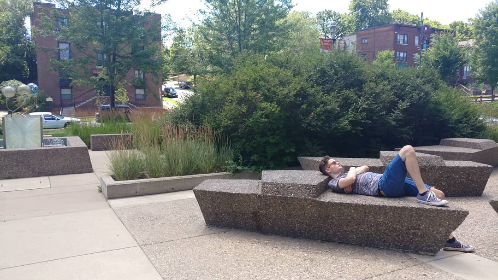

Michael Steven Schmidt
Cell: 651-999-9999Michael.mss.schmidt@gmail.com
Objective
I'm currently a full time student at Saint Paul College getting a degree in visualization and animation. In hopes to one day work for Naghty Dog Development Company.
Skills
- Proficient in HTML, CSS and Javascript Frameworks
- Proficient in Adobe Animate, Illustrator, InDesign, Photoshop and Premiere Pro
- Proficient in Gimp, Tumlt Hype, Blender, Maya and GarageBand
- Focused and detail-oriented
- Good problem solver
- Easy to get along with
- Versatile employee
Experience
Classes at Saint Paul College
Education
High School Diploma from South Saint Paul Secondary Pursuing Degree: Visualization and Animation, Saint Paul College, MN. Coursework includes HTML, CSS, Twitter Bootstrap, Adobe Animate, Adobe Illustrator, Adobe InDesign, Adobe Photoshop, Adobe Premiere Pro, Gimp, Tumlt Hype, Blender, Maya and GarageBand and some JavaScript/jQuery. Scheduled for graduation in 2020.
